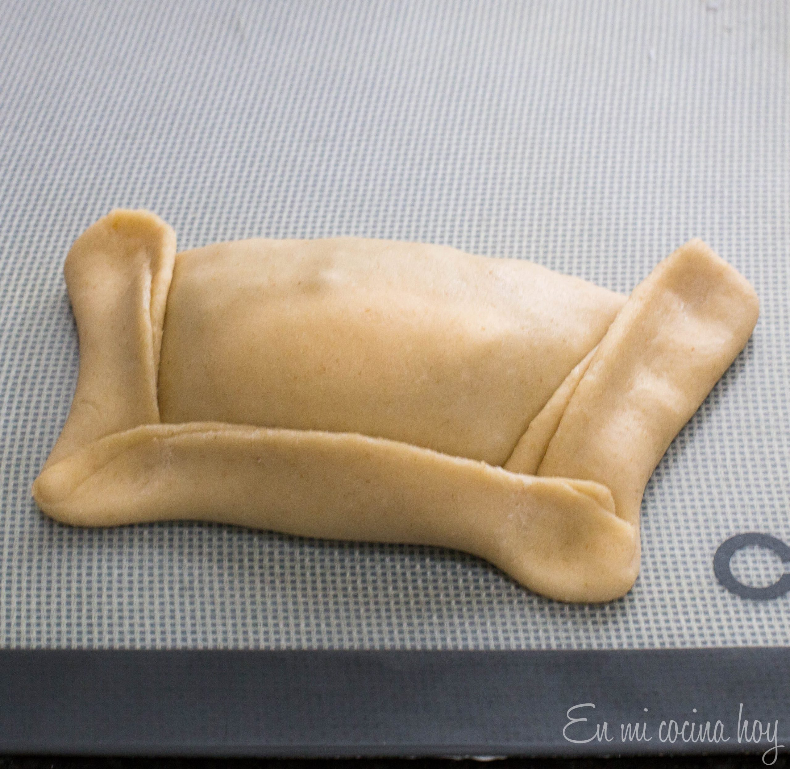

Empanadas
A traditional Chilean empanada with the perfect dough and filling.
Ingredients
For the pino,
- 1 kilo or 2 pounds of ground beef 90%
- 1 cup beef broth
- 3 large or 4 medium onions chopped into small cubes
- 2 tablespoons all-purpose flour
- 2 tablespoons red pepper or paprika or Merken (Chilean smoked chili)
- 1/2 teaspoon ground cumin
- salt and pepper
- 4 tablespoons vegetable oil
Optional,
- 20 black olives
- 40 raisins
- 4 hard-boiled eggs
For the dough,
- 1 cup whole milk
- 1 cup warm water
- 1 tablespoon salt
- 1 kilo or 2 pounds of all-purpose flour
- 4 egg yolks
- 180 grams/ 6,5 oz of melted shortening, warm
Instructions
- For the Pino, always prepare it the day before,
In a large saucepan, heat the oil and fry the meat
until lightly browned, about 8 minutes, add the paprika,
salt, pepper, and cumin, saute for a few minutes.
Add the broth and simmer for 30 minutes over low heat.
Add the onion, mix well, and cook over medium heat until
the onion is tender about 30 minutes.
Add the flour and stir well and adjust seasoning if
necessary. Cook two more minutes. Cool and refrigerate.
- For the dough,
Make a brine with the milk, water, and salt, stir to
dissolve the salt altogether. In a large bowl or a stand
mixer with the paddle attachment, mix the flour and egg
yolks, mix for a minute to incorporate.
Add the melted shortening and work a little more. At this
point, you will see only crumbs. To form the dough start
adding the brine with the mixer running on low speed until
the dough is soft and flexible. If needed, keep adding
water. Separate the dough into 20 portions and cover with
a moist cloth.

- Work each piece individually, rolling until thin, cut in
a circle about 7″ and fill with two tablespoons of Pino,
a quarter of a hard-boiled egg, olives, and raisins if
desired. Close by smearing the edge, pressing firmly,
and make the folds. Brush with an egg wash before baking.

- Preheat the oven to 350F or 180C. Bake for 30-35 minutes until golden.
- Serve hot.